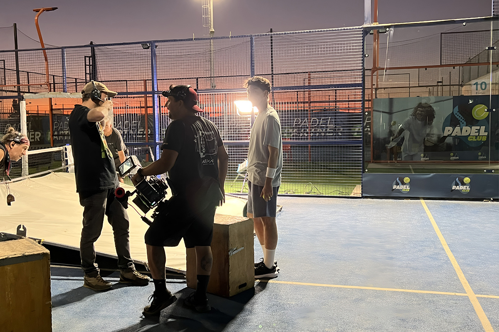

Comparini vuelve en forma de fichas
Con IA, 3D y mucho humor
Con IA, 3D y mucho humor

Cuando el team de Compara nos trajo el brief para la nueva campaña, lo primero que nos preguntamos fue: ¿Qué hacemos con Comparini? La primera campaña había sido un éxito… la segunda también, pero ¿daba para una tercera? Y la verdad es que ¡sí! Comparini tenía para rato; solo había que resolver un pequeño desafío: ¿cómo hacer algo completamente diferente con los mismos ingredientes?
Así empezamos a pensar cómo darle la vuelta, qué podíamos hacer distinto esta vez. Si en la primera campaña Comparini aparecía sorpresivamente, ahora debíamos sorprender nuevamente, pero de una forma nunca antes vista.
Lo primero que teníamos que tener en cuenta era el contexto: marzo. Un mes temido por todos por la cantidad de pendientes que aparecen. Pendientes que llegan a nuestra cabeza una y otra vez, interrumpiéndonos en los momentos más inesperados: los temidos “pensamientos intrusivos”. “No he comprado el SOAP…” “No he cambiado el seguro del auto…” Ese era el momento perfecto para que Comparini viniera al rescate.
Ahora solo faltaban los protagonistas, y ahí empezó una nueva búsqueda. Tenían que ser graciosos, simpáticos, buenos actores (obvio), y lo más importante: personajes completamente memorables. Así es como llegamos a la carismática Disley Ramos, una chica con una energía increíble que nos dejó a todos enamorados de su personalidad; el querido Tomás Leiva, quien comió cabritas como todo un profesional; y el graciosísimo Diego Urrutia, que, a pesar de no ser muy bueno para el pádel, le puso harto empeño.
Bueno, pero faltaba lo más importante: ¿qué hacíamos con Comparini para que fuera distinto? Hasta ahora, Comparini había sido una señora, un conserje e incluso un cantante de villancicos, pero lo que nunca había sido: un objeto inanimado. Es así como nacen Comparini Buda, Comparini pelota y Comparini cabrita. ¿Se imaginan cómo es decirle a Marcelo Comparini si puede actuar como una cabrita? ¿O como una pelota de pádel? Bueno… lo hicimos, y Marcelo, como siempre, lo hizo impecablemente.
Así, de la mano de Primo y con la ayuda de herramientas como la IA y el 3D, le dimos vida a este renovado Comparini, que, de manera hilarante, aparece en los contextos más inesperados. Era una técnica completamente nueva para nosotros, en la que Comparini era escaneado a medida que actuaba, y eso era traducido por un software a un modelo tridimensional.
No les miento: ¡nos sentíamos en Hollywood! Y así fue como, después de muuuuuuuchas pruebas, logramos darle vida por primera vez a un Comparini completamente renovado y personificado en los objetos más divertidos, rompiendo todos los límites creativos con esta campaña.

No les miento 2: el proceso no fue fácil ni rápido. Ha sido un largo trabajo de postproducción de al menos un mes y medio, pero valió completamente la pena. La campaña ha tenido una recepción increíble, logrando miles de visualizaciones en digital y muchas más en TV, y batiendo récords históricos en ventas para Compara. Resultados que, como equipo en Raya, nos tienen muy felices.
Ahora solo queda preguntarnos… ¿Dónde nos sorprenderá Comparini más adelante? La verdad es que ni él lo sabe… y nosotros tampoco.
 Actualidad
ActualidadEl recordado programa noventero “Venga Conmigo” marcó a toda una generación en Chile. Su exitoso segmento “Corazones Service” se transformó…
 Actualidad
ActualidadHace aproximadamente 2 meses comenzamos con el cierre de lo que empezó en julio como el “Compariniverse”.
 Actualidad
ActualidadHace unos meses lanzamos Compariniverse: la primera campaña en Chile protagonizada por una celebridad completamente clonada con IA.